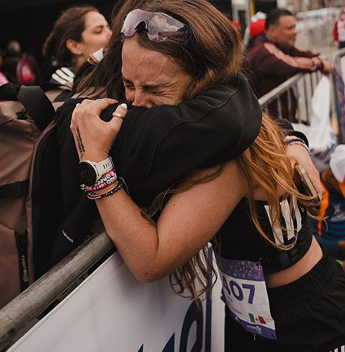
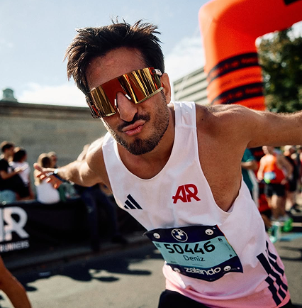
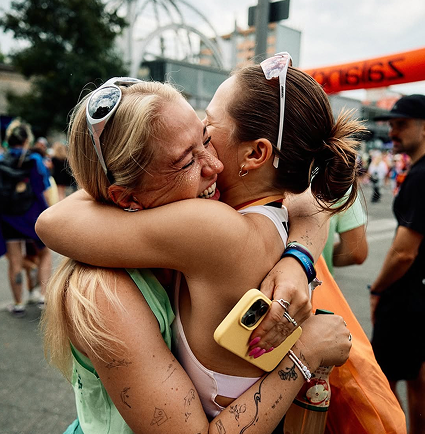
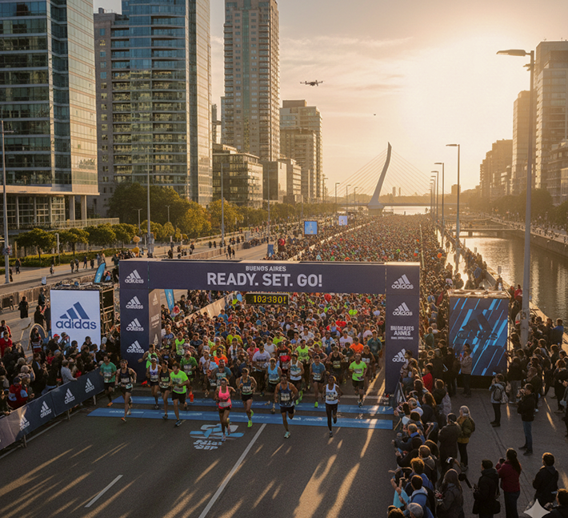

BENEFICIOS EXTRA
Descuentos exclusivos en productos Adidas, acceso a la expo previa y sorteos especiales.



La carrera recorrerá los puntos más emblemáticos de la ciudad, con salida y llegada en Puerto Madero.


Todos los inscriptos reciben remera oficial, número de corredor, chip de cronometraje y medalla finisher.
Descuentos exclusivos en productos Adidas, acceso a la expo previa y sorteos especiales.